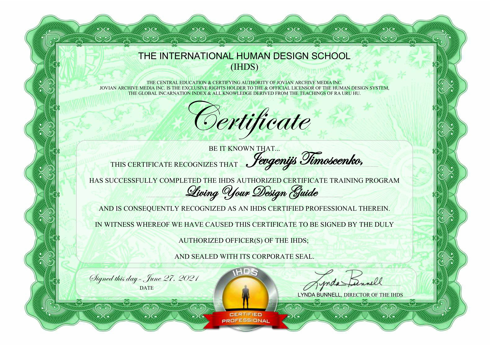
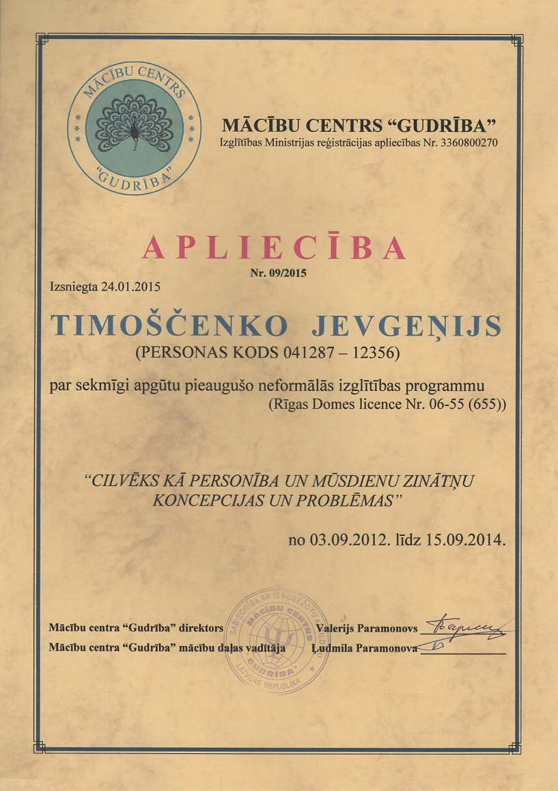
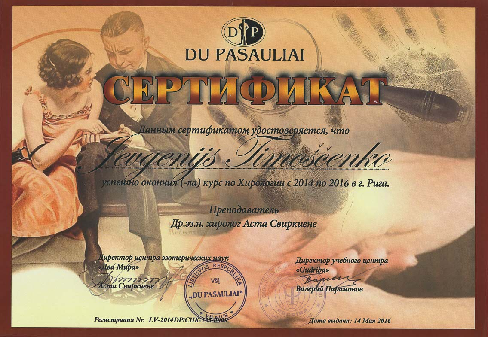
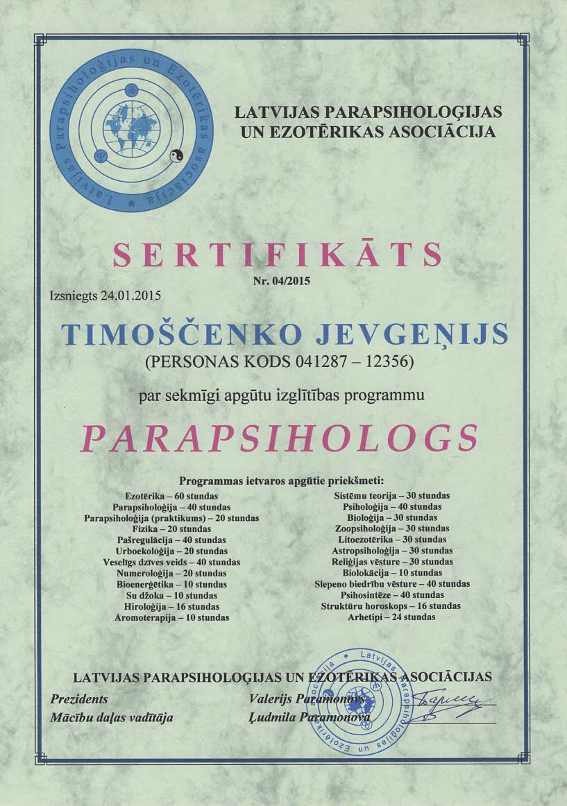
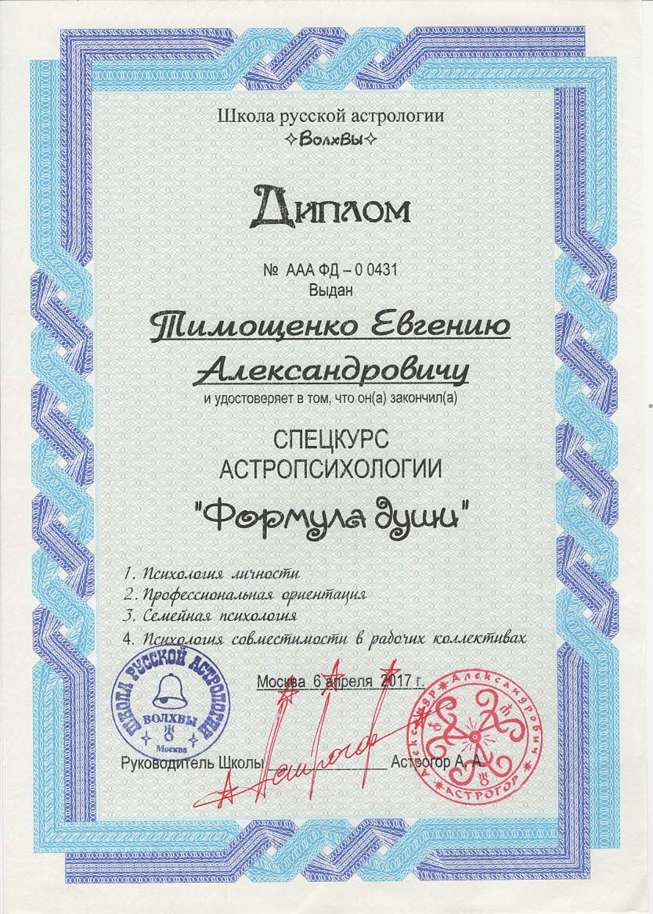
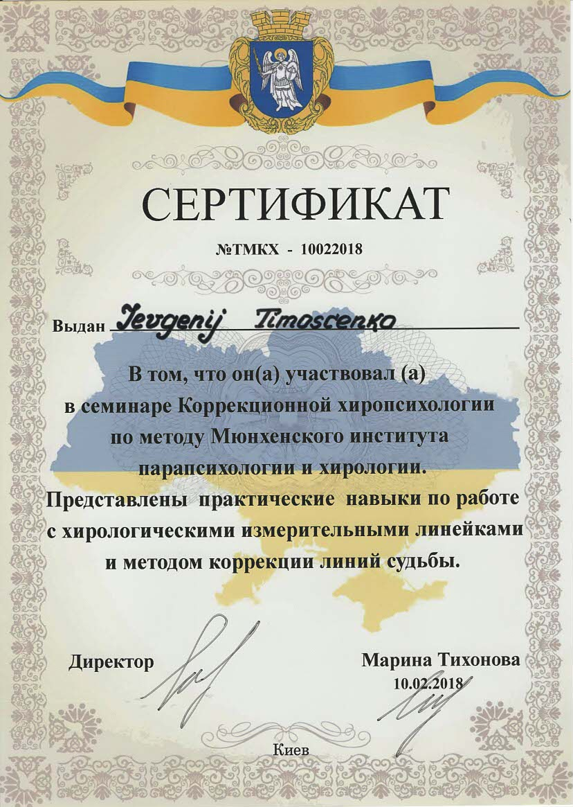

Евгений Тимощенко — об авторе
Евгений Тимощенко — парапсихолог и духовный наставник, исследователь сознания, духовных практик и необычных явлений. Его профессиональный и духовный путь объединяет академическое образование, многолетнее изучение парапсихологии и эзотерических традиций, практическую работу и собственную исследовательскую деятельность.
В университете Евгений изучал теологию, а также получил образование в области программирования и информационных технологий. В настоящее время он обучается на магистерской программе по психологии в Англии, продолжая углублять знания о человеческом сознании, восприятии и поведении.
Евгений является действующим членом British Psychological Society (BPS) — профессионального общества Великобритании в области психологии. British Psychological Society →
С 2012 года Евгений изучал парапсихологию и эзотерику в Риге. За годы практики он участвовал и самостоятельно проводил различные экспедиции и ретриты, принимал участие в практических группах, проектах и парапсихологических исследованиях. Этот опыт стал основой для дальнейшего самостоятельного изучения сознания, духовных практик и необычных явлений.
В рамках своей деятельности Евгений проводит собственные исследования и развивает авторские подходы к изучению парапсихологии, сознания и духовного опыта. На основе накопленного материала и практического опыта им развивается собственная исследовательская школа, объединяющая теоретическое изучение, наблюдения, практические эксперименты и систематизацию полученных результатов.
Его научно-исследовательская деятельность направлена на изучение вопросов сознания, восприятия, необычных психических феноменов, духовного опыта и взаимодействия различных аспектов человеческого восприятия. Особое внимание уделяется сопоставлению личного опыта, практических наблюдений и знаний, полученных в ходе академического обучения.
Особое место в духовном пути Евгения занимает практика самоисцеления и сонастройки духа, души и тела. Это направление связано с поиском внутренней гармонии, осознанности и баланса между духовным состоянием, внутренним миром и телесным восприятием себя.
С 2016 года Евгений исследует и практикует Дизайн Человека, а с 2021 года проводит воркшопы «Проживай Свой Дизайн», посвящённые исследованию индивидуальных особенностей и потенциала человека.
Евгений также зарегистрирован как специалист в международной школе Human Design — International Human Design School .
За годы своего профессионального и духовного пути Евгений изучил различные направления, включая парапсихологию, Таро, хирологию, биоэнергетику, Формулу Души и Дизайн Человека. Он проводит индивидуальные консультации, практики, лекции, семинары и обучающие занятия.
Сегодня Евгений продолжает развивать собственные исследования и авторские методы, объединяя академический интерес к психологии с многолетним практическим опытом в области парапсихологии, духовных традиций и исследования сознания.
Путь профессионального развития

Сертификат Гида

Человек как личность и концепции и проблемы современной науки

Сертификат по Хирологии

Сертификат Парапсихолога

Диплом «Формула Души»

Сертификат по хиропсихологии
IHDS Certified Analyst